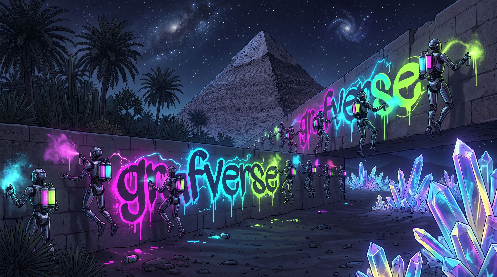

grafverse
Paint a dead moon to life.

You are what you paint. Paint what you are.
Free in your browser · no install, no download

You are what you paint. Paint what you are.
Free in your browser · no install, no download